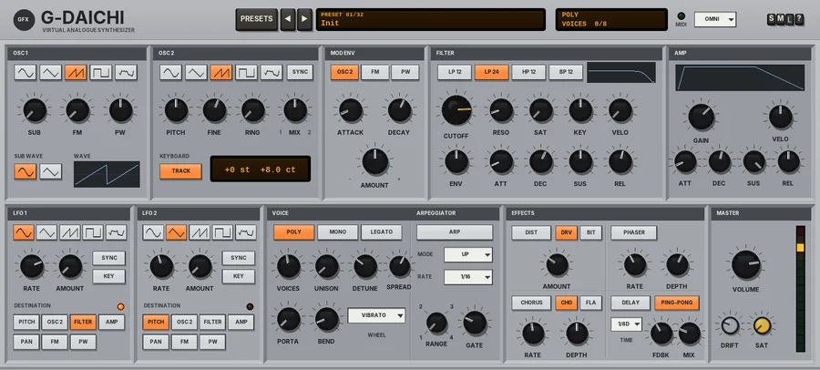

G Daichi
A virtual-analogue polysynth: two oscillators with sync, FM and ring, a multimode filter, two LFOs, unison, an arpeggiator and an effects strip.

Overview
G Daichi is a virtual-analogue polysynth in the spirit of the much-loved early-2000s freeware VA synths, themselves modelled on the classic virtual-analogue lead synths of the 90s. It is quick to program: everything is on one panel, one knob per job.
Two oscillators feed the sound. OSC 1 has a sub-oscillator an octave down and can be frequency-modulated by OSC 2; OSC 2 can be detuned, hard-synced to OSC 1, ring-modulated with it or taken off the keyboard altogether. A simple MOD ENV sweeps OSC 2's pitch, the FM amount or the pulse width - the classic sync-sweep lead and FM-bell tricks. The mix runs through a FILTER (12 dB or self-oscillating 24 dB low-pass, high-pass or band-pass) with its own envelope and saturation, then the AMP envelope.
Two LFOs, up to 16 voices with up to 8 unison voices per note, portamento, a tempo-locked arpeggiator and an EFFECTS strip (distortion or bit crush, phaser, chorus or flanger, and a stereo tempo-synced delay) finish it off. DRIFT gives it a gently unstable, analogue feel.
Reach for it for
- Fat saw basses, acid lines and sub basses
- Sync-sweep, square and wide unison leads
- PWM strings, warm and sweeping pads
- FM electric pianos, bells and plucks
- Tempo-locked arpeggios and chip-tune sounds
- Noise sweeps, risers and laser effects
Loading and playing it
- Insert G Daichi on a new track. It is an instrument: it makes its own sound and needs no audio input.
- Arm the track with a MIDI input and record monitoring on, or put a MIDI item on the track, and play. The MIDI light in the header blinks on each note.
- Pick a patch with PRESETS or the ◄ / ► keys, then shape it with the panel.
- For arpeggios, switch ARP on and press play in REAPER: the arpeggiator runs in time with the project tempo.
Controls
Drag the knobs up and down (hold Shift for fine moves); double-click or Ctrl-click to reset one. A knob shows its value while you hover over it. Keys light orange when they are on.
The header
- PRESETS
- Opens the patch list (or click the display).
- ◄ / ►
- Step through the patches.
- Preset display
- Shows the patch number and name. Click it for the list.
- Voice display
- POLY, MONO or LEGATO (with ARP when the arpeggiator is on), and VOICES: how many voices are sounding out of the VOICES setting.
- MIDI
- Blinks on each note.
- OMNI / CH
- The MIDI channel. Click it for a list: Omni (the default, every channel) or Channel 1 - 16.
- S / M / L
- Panel size: small, medium or large. The panel also scales to fit the plugin window.
- ?
- Opens a pop-up with the design credit, the GFX website address and the address of this manual. Click anywhere to close it.
OSC 1
- WAVE
- Five keys with wave glyphs: sine, triangle, saw (the default), square (a pulse, see PW) or noise.
- SUB
- The level of the sub-oscillator, one octave below OSC 1, 0 - 100% (0% by default).
- FM
- How much OSC 2 modulates OSC 1's frequency, 0 - 100% (0% by default). On the sine and triangle it is phase modulation (clean FM bells and tines); on the saw and square it bends the pitch through the waveform for a harder, grittier edge. Set OSC 2's PITCH to choose the overtones.
- PW
- The pulse width of the square waves (on both oscillators), 5 - 95% (50% = a true square). Narrow settings sound thin and nasal.
- SUB WAVE
- The sub-oscillator's wave: sine or square.
OSC 2
- WAVE
- The same five waves as OSC 1 (saw by default).
- SYNC
- Hard-syncs OSC 2 to OSC 1: OSC 2 restarts every cycle of OSC 1, so changing OSC 2's pitch changes its tone rather than its pitch. Sweep PITCH (or use the MOD ENV) for the classic tearing sync lead.
- PITCH
- OSC 2's tuning, -24 to +24 semitones (0 by default). The display under the knobs shows PITCH and FINE together.
- FINE
- Fine tuning, -50 to +50 cents (+8 cents by default, for a gentle beating against OSC 1).
- RING
- Ring modulation (OSC 1 times OSC 2), 0 - 100%. It replaces the plain oscillators as it comes up: clangorous, bell-like tones that change with PITCH.
- MIX
- The balance between OSC 1 (left, 1) and OSC 2 (right, 2); 50% by default.
- TRACK
- KEYBOARD tracking, on by default. Off, OSC 2 stays at a fixed pitch whatever you play - useful with SYNC, RING and FM for effects.
MOD ENV
A simple attack / decay envelope that starts with every note.
- OSC 2 / FM / PW
- Where it goes: OSC 2's pitch (up to 4 octaves at full AMOUNT), the FM amount, or the pulse width.
- ATTACK
- 0.5 ms - 5 s (1 ms by default).
- DECAY
- 5 ms - 5 s (300 ms by default).
- AMOUNT
- -100 to +100% (0, off, by default). Negative values sweep the other way.
FILTER
- LP 12 / LP 24 / HP 12 / BP 12
- The filter type: a 12 dB per octave low-pass, a 24 dB low-pass (the default, a ladder that self-oscillates at full RESO), a 12 dB high-pass or a 12 dB band-pass. The window above draws the filter envelope.
- CUTOFF
- 20 Hz - 20 kHz (6 kHz by default).
- RESO
- Resonance, 0 - 100% (10% by default). LP 24 whistles and sings at the top; the 12 dB types stay tamer.
- SAT
- Drive into the filter, 0 - 100%: warmth at low settings, a thick, compressed growl higher up.
- KEY
- Keyboard tracking of the cutoff, 0 - 100% (50% by default). At 100% the cutoff follows the notes exactly.
- VELO
- How much key velocity opens the filter and deepens the filter envelope, 0 - 100%.
- ENV
- The filter envelope's amount, -100 to +100% (0 by default); up to 7 octaves at full.
- ATT, DEC, SUS, REL
- The filter envelope: attack 0.5 ms - 5 s, decay 5 ms - 8 s (400 ms), sustain 0 - 100% (50%), release 5 ms - 8 s (300 ms).
AMP
- Envelope window
- Draws the amp envelope.
- GAIN
- The patch level, -24 to +12 dB.
- VELO
- How much velocity changes the level, 0 - 100% (50% by default).
- ATT, DEC, SUS, REL
- The amp envelope: attack 0.5 ms - 5 s, decay 5 ms - 8 s (300 ms), sustain 0 - 100% (100%), release 5 ms - 8 s (200 ms).
LFO 1 and LFO 2
Two identical LFOs. LFO 1 starts on the filter, LFO 2 on pitch; both have AMOUNT at 0. A light by DESTINATION blinks with the LFO.
- Shape
- Five keys: sine, triangle, saw, square or S&H (random steps).
- RATE
- Free: 0.02 - 30 Hz (LFO 1 5 Hz, LFO 2 0.5 Hz). With SYNC on, the knob steps through note values instead: 4/1, 2/1, 1/1, 1/2, 1/2T, 1/4 (the default), 1/4T, 1/8, 1/8T, 1/16, 1/16T, 1/32.
- AMOUNT
- The depth, 0 - 100%.
- SYNC
- Locks the rate to the project tempo; while REAPER plays, the LFO also follows the beat.
- KEY
- Restarts the LFO with each new note.
- DESTINATION
- PITCH (vibrato, up to an octave), OSC 2 (OSC 2's pitch only, up to 2 octaves), FILTER (up to 4 octaves), AMP (tremolo), PAN, FM or PW (pulse-width modulation).
VOICE
- POLY / MONO / LEGATO
- Polyphonic; monophonic (every note restarts the envelopes); or legato (overlapping notes glide without a new attack).
- VOICES
- How many voices, 1 - 16 (8 by default). The unison voices come out of this pool.
- UNISON
- Voices per note, 1 - 8 (1, off, by default).
- DETUNE
- The spread of tuning across the unison voices, 0 - 50 cents (15 by default).
- SPREAD
- The stereo spread of the unison voices, 0 - 100% (60% by default).
- PORTA
- Portamento: the glide from the last note, 0 (off) to 2 s.
- BEND
- Pitch-bend range, 0 - 24 semitones (2 by default).
- WHEEL
- What the mod wheel (CC1) does: OFF, VIBRATO (the default, its own 5.5 Hz vibrato), LFO 1 (brings LFO 1's AMOUNT up to full), CUTOFF (opens the filter up to 3 octaves) or FM.
ARPEGGIATOR
The arpeggiator plays the held notes in time with the project tempo while REAPER plays.
- ARP
- Switches the arpeggiator on.
- MODE
- UP, DOWN, UP-DOWN, DOWN-UP, PLAYED (in the order you played them), RANDOM or CHORD (all the held notes together).
- RATE
- 1/4, 1/4T, 1/8, 1/8T, 1/16 (the default), 1/16T or 1/32.
- RANGE
- 1 - 4 octaves.
- GATE
- The length of each note, 10 - 200% of a step (60% by default). Over 100% the notes overlap.
EFFECTS
- DIST
- Switches the distortion on. DRV is a warm overdrive; BIT is a bit and sample-rate crusher.
- AMOUNT
- How hard it drives or crushes, 0 - 100% (30% by default).
- PHASER
- A stereo four-stage phaser. RATE 0.05 - 10 Hz (0.4 Hz), DEPTH 0 - 100% (60%).
- CHORUS
- CHO is a stereo chorus, FLA a flanger with feedback. RATE 0.05 - 10 Hz (0.6 Hz), DEPTH 0 - 100% (50%).
- DELAY
- A stereo delay locked to the project tempo, its repeats darker each time round.
- PING-PONG
- Bounces the repeats from side to side (on by default).
- TIME
- 1/2, 1/4D, 1/4, 1/4T, 1/8D (the default), 1/8, 1/8T or 1/16.
- FDBK
- Feedback, 0 - 90% (35% by default).
- MIX
- The level of the repeats, 0 - 100% (25% by default).
MASTER
- VOLUME
- Output level, -24 to +6 dB.
- DRIFT
- 0 - 100% (25% by default). See Drift below.
- SAT
- The GFX band saturation on the way out: only the lows and highs are saturated (the mids stay clean), with a soft curve that loosens as the level rises. 0% by default.
- OUT: OFF / CLIP / LIMIT
- The final stage: nothing, a soft clipper just under 0 dB (the default; the CLIP key flashes red while it works), or a look-ahead limiter (3 ms latency, compensated by REAPER). The band frequencies, bias and ceiling are in the parameter list.
- Meter
- The output level.
Drift
DRIFT makes G Daichi behave a little like an analogue synth: the tuning wanders slowly, OSC 2 wanders against OSC 1, the filter cutoff moves, the speed of the phaser and chorus breathes, and every note lands slightly differently in tune. At 0% everything is steady.
MIDI
- Notes
- Played across the whole keyboard, with velocity.
- Pitch bend
- Over the BEND range.
- CC1 (mod wheel)
- The WHEEL destination.
- CC64
- Sustain pedal.
- CC120 / CC123
- All sound off / all notes off.
Presets
Presets set the whole synth apart from the MASTER section (DRIFT, VOLUME, SAT and the output stage) and the MIDI channel.
- Init
- Two saws, OSC 2 8 cents up, through the open LP 24 filter.
- Fat Saw Bass
- Two saws an octave apart with a sub, a closed, saturated LP 24 with a punchy envelope, two unison voices, legato.
- Acid Line
- A single saw through a nearly closed, very resonant LP 24 with a snappy envelope and a short glide.
- FM Bass
- Sine FM with the MOD ENV on the FM amount: a woody pluck that softens as it decays.
- Sub Bass
- A sine with a sine sub and a little triangle on top, LP 12, legato.
- Sync Lead
- OSC 2 synced and swept by the MOD ENV, with a little vibrato.
- Square Lead
- Two squares an octave apart, slow PWM from LFO 2, vibrato and glide.
- Unison Lead
- Seven detuned saws spread wide, legato, with chorus and delay.
- Soft Lead
- Triangle and sine, a gentle attack, vibrato, glide and delay.
- PWM Strings
- Two squares with both LFOs on the pulse width, a slow attack and chorus.
- Warm Pad
- Saws with a slow filter and amp, the filter breathing on LFO 1, chorus and delay.
- Sweep Pad
- Saw and square a fifth apart, a slow resonant filter sweep, phaser and delay.
- Glass Pad
- Sine and square an octave and a fifth apart with ring modulation through the band-pass, chorus and delay.
- FM E-Piano
- Sine FM with a decaying FM amount, velocity, phaser and chorus.
- Bell Tines
- Sine FM at a high, non-harmonic ratio with a long decay and delay.
- Clav Pluck
- A narrow pulse and saw through a resonant band-pass with a short envelope and phaser.
- Organ
- Sines at 8', 4' and a sub, with a fast chorus and a little vibrato.
- Poly Brass
- Saws with a slow-opening LP 24, velocity on the filter, vibrato and chorus.
- Brass Stab
- Saw and pulse with a quick filter envelope and two unison voices.
- Arp Pulse
- A resonant square pluck arpeggiated up over two octaves at 1/16, with delay.
- Arp Glass
- An FM-tinged sine arpeggiated up and down over three octaves, with chorus and delay.
- Chip Square
- A thin square, mono and unfiltered; the mod wheel brings in a fast square trill.
- Chip Arp
- A square arpeggiated up and down at 1/32 over three octaves.
- Noise Sweep
- Noise through a slowly sweeping resonant band-pass, auto-panned, with phaser and delay.
- Wind Riser
- Noise with a long rising filter and amp, random filter steps and phaser.
- Laser Zap
- OSC 2 diving fast on a negative MOD ENV, with FM and a triplet delay.
- Reso Pluck
- A short, very resonant LP 12 pluck with delay.
- Hoover
- Four detuned, gliding square-and-saw unison voices with PWM, saturation and chorus.
- Bit Bass
- Square bass with a square sub, crushed by the BIT distortion.
- Phase Keys
- Saw and triangle keys through a deep, slow phaser.
- Fifth Lead
- Two saws a fifth apart, legato with glide, vibrato and delay.
- Dark Drone
- Saws an octave down with a sub, a dark resonant filter breathing very slowly, long envelopes, phaser and delay.
Tips
- For the classic sync lead, switch SYNC on, set MOD ENV to OSC 2 with a positive AMOUNT and a decay of half a second or so.
- FM sounds clearest with both oscillators on sine; set PITCH to 12, 19 or 24 for bright, harmonic tones, and odd values for bells.
- Turn UNISON up and DETUNE to 15 - 25 cents for supersaw-style leads; raise VOICES too if you want to play chords.
- A little filter SAT goes a long way on basses; push it with LP 24 and high RESO for squelch.
- Set DRIFT to 0 when you want an exact, repeatable sound - for tight unison or layered parts.
File: gfx-g-daichi.jsfx